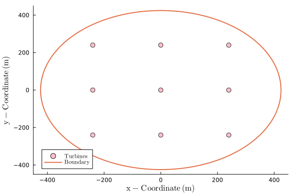
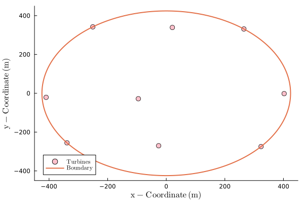

Setting up and running an optimization
Note: First Complete the Quick Start
FLOWFarm is specifically designed for efficient optimization using gradient-based optimization methods. Besides the steps outlined in the Quick Start, we need to define the following before we can run an optimization:
- (1) Optimization related variables
- (2) A container for non-differentiated parameters
- (3) Objective and constraint function(s)
- (4) Optimization tool specific items
In this tutorial we demonstrate optimizing using the IPOPT algorithms via SNOW.jl for simplicity.
using SNOWFirst, set up optimization related variables. We will have two constraints, one to keep turbines from getting too close to each other (spacing), and the other to keep turbines inside the desired area (boundary). FLOWFarm provides several different ways of handling boundary constraints, including concave boundaries. However, for this tutorial we will use a simple circular boundary.
(1) Optimization related variables
# scale objective derivatives to be between 0 and 1
objectivescale = 1E-6
# scale boundary constraint derivatives to be between 0 and 1
constraintscaleboundary = 1.0E-3
# scale spacing constraint derivatives to be between 0 and 1
constraintscalespacing = 1.0
# set the minimum spacing between turbines
minimumspacing = 160.0
nothing(2) A container for non-differentiated parameters
# set up a struct for use in optimization functions
mutable struct params_struct{}
modelset
rotorsamplepointsy
rotorsamplepointsz
turbinez
ambientti
rotordiameter
boundarycenter
boundaryradius
objectivescale
constraintscaleboundary
constraintscalespacing
minimumspacing
hubheight
turbineyaw
ctmodels
generatorefficiency
cutinspeed
cutoutspeed
ratedspeed
ratedpower
windresource
powermodels
end
params = params_struct(modelset, rotorsamplepointsy, rotorsamplepointsz, turbinez, ambientti,
rotordiameter, boundarycenter, boundaryradius, objectivescale, constraintscaleboundary,
constraintscalespacing, minimumspacing, hubheight, turbineyaw,
ctmodels, generatorefficiency, cutinspeed, cutoutspeed, ratedspeed, ratedpower,
windresource, powermodels)
nothing(3) Objective and constraint function(s)
Now we are ready to set up wrapper functions for the objective and constraints.
# set up boundary constraint wrapper function
function boundary_wrapper(x, params)
# include relevant params
boundarycenter = params.boundarycenter
boundaryradius = params.boundaryradius
constraintscaleboundary = params.constraintscaleboundary
# find the number of turbines
nturbines = Int(length(x)/2)
# extract x and y locations of turbines from design variables vector
turbinex = x[1:nturbines]
turbiney = x[nturbines+1:end]
# get and return boundary distances
return FLOWFarm.circle_boundary(boundarycenter, boundaryradius, turbinex, turbiney).*constraintscaleboundary
end
# set up spacing constraint wrapper function
function spacing_wrapper(x, params)
# include relevant params
rotordiameter = params.rotordiameter
constraintscalespacing = params.constraintscalespacing
minimumspacing = params.minimumspacing
# get number of turbines
nturbines = Int(length(x)/2)
# extract x and y locations of turbines from design variables vector
turbinex = x[1:nturbines]
turbiney = x[nturbines+1:end]
# get and return spacing distances
return constraintscalespacing.*(minimumspacing .- FLOWFarm.turbine_spacing(turbinex,turbiney))
end
# set up aep wrapper function
function aep_wrapper(x, params)
# include relevant params
turbinez = params.turbinez
rotordiameter = params.rotordiameter
hubheight = params.hubheight
turbineyaw =params.turbineyaw
ctmodels = params.ctmodels
generatorefficiency = params.generatorefficiency
cutinspeed = params.cutinspeed
cutoutspeed = params.cutoutspeed
ratedspeed = params.ratedspeed
ratedpower = params.ratedpower
windresource = params.windresource
powermodels = params.powermodels
modelset = params.modelset
rotorsamplepointsy = params.rotorsamplepointsy
rotorsamplepointsz = params.rotorsamplepointsy
objectivescale = params.objectivescale
# get number of turbines
nturbines = Int(length(x)/2)
# extract x and y locations of turbines from design variables vector
turbinex = x[1:nturbines]
turbiney = x[nturbines+1:end]
# calculate AEP
aep = objectivescale*FLOWFarm.calculate_aep(turbinex, turbiney, turbinez, rotordiameter,
hubheight, turbineyaw, ctmodels, generatorefficiency, cutinspeed,
cutoutspeed, ratedspeed, ratedpower, windresource, powermodels, modelset,
rotor_sample_points_y=rotorsamplepointsy,rotor_sample_points_z=rotorsamplepointsz)
# return the AEP
return aep
end
# set up optimization problem wrapper function
function wind_farm_opt!(g, x, params)
nturbines = Int(length(x)/2)
# calculate spacing constraint value and jacobian
spacing_con = spacing_wrapper(x, params)
# calculate boundary constraint and jacobian
boundary_con = boundary_wrapper(x, params)
# combine constaint values and jacobians into overall constaint value and jacobian arrays
g[1:(end-nturbines)] = spacing_con[:]
g[end-nturbines+1:end] = boundary_con[:]
# calculate the objective function and jacobian (negative sign in order to maximize AEP)
obj = -aep_wrapper(x, params)[1]
return obj
end
nothingThe minimize function expects an objective function that only takes two parameters (g and x). By creating a forced signature, we are able to pass in params directly into the optimization.
# generate objective function wrapper
obj_func!(g, x) = wind_farm_opt!(g, x, params)obj_func! (generic function with 1 method)(4) Optimization tool specific items
# initialize design variable vector
x0 = [copy(turbinex);copy(turbiney)]
# set general lower and upper bounds for design variables
lx = zeros(length(x0)) .- boundaryradius
ux = zeros(length(x0)) .+ boundaryradius
# set general lower and upper bounds for constraints
ng = Int(nturbines + (nturbines)*(nturbines - 1)/2)
lg = [-Inf*ones(Int((nturbines)*(nturbines - 1)/2)); -Inf*ones(nturbines)]
ug = [zeros(Int((nturbines)*(nturbines - 1)/2)); zeros(nturbines)]
# IPOPT options
ip_options = Dict(
"max_iter" => 100,
"tol" => 1e-6
)
solver = IPOPT(ip_options)
# initialize SNOW options
options = Options(solver=solver, derivatives=ForwardAD()) # choose AD derivatives
nothingRun the optimization
Now that the optimizer is set up, we are ready to optimize and check the results:
- Run time (
clk) - Optimization information (
info) - AEP Improvement (
100*(aepfinal - aep)/aep) - Optimized Turbine Positions (
turbinexoptandturbineyopt)
# optimize
t1 = time() # start time
xopt, fopt, info, out = minimize(obj_func!, x0, ng, lx, ux, lg, ug, options)
t2 = time() # end time
clk = t2-t1 # approximate run time
# get final aep
aepfinal = -fopt/objectivescale
# print optimization results
println("Finished in : ", clk, " (s)")
println("info: ", info)
println("Initial AEP: ", aep)
println("Final AEP: ", aepfinal)
println("AEP improvement (%) = ", 100*(aepfinal - aep)/aep)
# extract final turbine locations
turbinexopt = copy(xopt[1:nturbines])
turbineyopt = copy(xopt[nturbines+1:end])9-element Vector{Float64}:
-255.34037051058704
-20.86862136430824
342.2632040312789
-270.2642265480698
-28.102785923667955
339.0340833008482
-274.4234995869763
-1.7852915518775119
331.3900205456609Initial turbine layout:

Final turbine layout:
